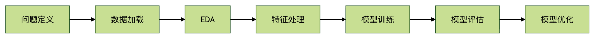

機械学習 - 住宅価格予測
住宅を購入するとき、人は通常、立地、面積、築年数、部屋数、人口密度、交通条件などを総合的に判断する。それぞれの要素が価格に影響を与えるが、その影響は線形的でも単一的でもなく、複合的に絡み合い、权衡し、せめぎ合った結果である。
機械学習における回帰問題とは、本質的にこの「経験に基づく判断」を、計算可能で再利用可能、かつ評価可能な数学的モデルに変換することである。
この章ではゼロから、以下の住宅価格予測の標準的な機械学習フローを一通り実施する：データ理解 → 特徴分析 → モデル訓練 → モデル評価 → モデル最適化。目的はAPIを暗記することではなく、各ステップで何を行っているのか、なぜそれを行うのかを理解することである。
第一部：プロジェクト準備と環境構築
1.1 使用する主要ツール
- NumPy：基盤となる数値計算ツール。効率的な配列演算を提供する。
- Pandas：表形式データ分析の中核ツール。機械学習の前段階に必須。
- Matplotlib / Seaborn：データ可視化。データの分布と関係性の理解に使用。
- Scikit-learn：機械学習ツールボックス。データセット、モデル、評価手法を網羅。
1.2 依存関係のインストール
pip install numpy pandas matplotlib seaborn scikit-learn
第二部：データセットの読み込みと理解
初期のチュートリアルではBoston Housingデータセットがよく使われていたが、このデータセットは非推奨となっている。ここでは公式推奨のCalifornia Housingデータセットを使用する。概念は同じで、データはより標準化されている。
実例：データの読み込み
from sklearn.datasets import fetch_california_housing
# カリフォルニア住宅価格データセットを読み込む
data = fetch_california_housing()
# 特徴データ（X）
df_features = pd.DataFrame(
data.data,
columns=data.feature_names
)
# 目的変数（y）：住宅価格の中央値
df_target = pd.DataFrame(
data.target,
columns=['MedHouseVal']
)
print(df_features.head())
print(df_target.head())
出力：
MedInc HouseAge AveRooms AveBedrms Population AveOccup Latitude Longitude 0 8.3252 41.0 6.984127 1.023810 322.0 2.555556 37.88 -122.23 1 8.3014 21.0 6.238137 0.971880 2401.0 2.109842 37.86 -122.22 2 7.2574 52.0 8.288136 1.073446 496.0 2.802260 37.85 -122.24 3 5.6431 52.0 5.817352 1.073059 558.0 2.547945 37.85 -122.25 4 3.8462 52.0 6.281853 1.081081 565.0 2.181467 37.85 -122.25 MedHouseVal 0 4.526 1 3.585 2 3.521 3 3.413 4 3.422
ここで次の3点を明確にすべきである：
- 各行は1軒の住宅の統計的特徴である
- 各列は予測に使用できる変数である
MedHouseValは予測対象の目的変数である
第三部：探索的データ分析（EDA）
モデルを訓練する前に、まず次の問いに答えなければならない：データに学習する価値があるか？
3.1 データ構造と欠損値の確認
実例：データ概要
print("目的変数の次元:", df_target.shape)
print("\nデータ型と欠損状況：")
df_features.info()
print("\n欠損値の統計：")
print(df_features.isnull().sum())
結論：
- サンプル数は十分（約2万件）
- すべて数値型の特徴量
- 欠損値なし、そのままモデル構築可能
3.2 単一特徴と住宅価格の関係
機械学習はブラックボックスではない。少なくとも入門段階では、モデルが何を学習しているのかを知るべきである。
実例：部屋数と住宅価格の関係
plt.figure(figsize=(8, 6))
plt.scatter(df_features['AveRooms'], df_target['MedHouseVal'], alpha=0.4)
plt.xlabel('Average Rooms')
plt.ylabel('Median House Value')
plt.title('Rooms vs House Price')
plt.grid(True)
plt.show()
直感的な結論：部屋数が多いほど住宅価格は全体的に高くなるが、ばらつきも顕著である。これこそが回帰モデルが存在する意味である。
3.3 特徴量の相関分析
実例：相関ヒートマップ
df_all = pd.concat([df_features, df_target], axis=1)
corr = df_all.corr()
plt.figure(figsize=(10, 8))
sns.heatmap(corr, cmap='coolwarm', center=0)
plt.title('Feature Correlation Heatmap')
plt.show()
このステップの目的は「モデルを選ぶ」ことではなく、学習可能な統計的関係が確かに存在することを確認することである。
第四部：最初の回帰モデルを構築する
4.1 トレーニングセットとテストセットに分割する
モデルは同じデータで学習と試験の両方を行ってはならない。そうでなければ評価結果は無意味になる。
実例：データセットの分割
X = df_features
y = df_target['MedHouseVal']
X_train, X_test, y_train, y_test = train_test_split(
X, y, test_size=0.2, random_state=42
)
print("トレーニングセット:", X_train.shape)
print("テストセット:", X_test.shape)
4.2 線形回帰モデルを訓練する
実例：モデルの訓練
model = LinearRegression()
model.fit(X_train, y_train)
print("切片:", model.intercept_)
print("係数:")
for name, coef in zip(X.columns, model.coef_):
print(f"{name}: {coef:.4f}")
線形回帰の利点は：解釈可能性が高いことであり、回帰問題の本質を理解するのに適している。
第五部：モデルの予測と評価
5.1 予測結果の比較
実例：予測値と実測値
result = pd.DataFrame({
"Actual": y_test.values,
"Predicted": y_pred
})
print(result.head())
5.2 評価指標を用いてモデルを定量化する
実例：評価指標
mse = mean_squared_error(y_test, y_pred)
r2 = r2_score(y_test, y_pred)
print("MSE:", mse)
print("R2:", r2)
解説：
- MSEが小さいほど、予測誤差が低い
- R²が1に近いほど、モデルの説明力が強い
第六部：モデル最適化 —— 標準化とリッジ回帰
6.1 なぜ標準化が必要か
特徴量によって単位や尺度が大きく異なると、モデルが数値の大きい特徴量に偏ってしまう。
実例：特徴量の標準化
scaler = StandardScaler()
X_train_scaled = scaler.fit_transform(X_train)
X_test_scaled = scaler.transform(X_test)
6.2 リッジ回帰による過学習の抑制
実例：リッジ回帰
ridge = Ridge(alpha=1.0)
ridge.fit(X_train_scaled, y_train)
y_pred_ridge = ridge.predict(X_test_scaled)
print("Ridge MSE:", mean_squared_error(y_test, y_pred_ridge))
print("Ridge R2:", r2_score(y_test, y_pred_ridge))
第七部：全体の流れの振り返り

その他の拡張
クリックしてノートを共有
ノートは本記事の内容を拡張したものである必要があります！
記事の投稿はこちらをクリック
登録招待コードの取得方法
ノートを共有する前にログインが必要です！
登録招待コードの取得方法